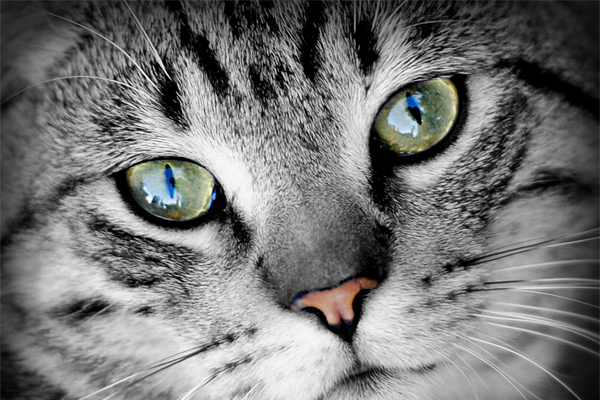
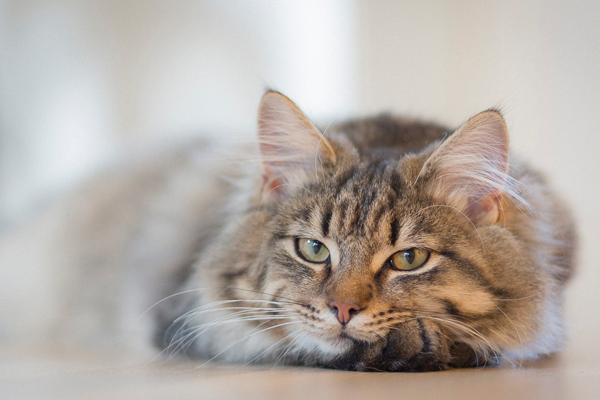
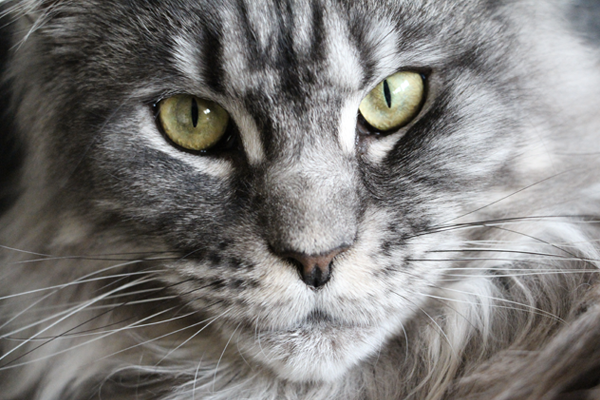
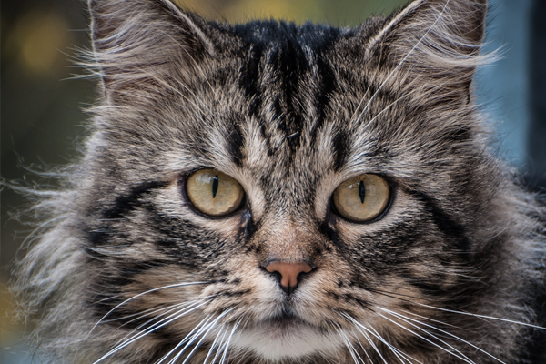
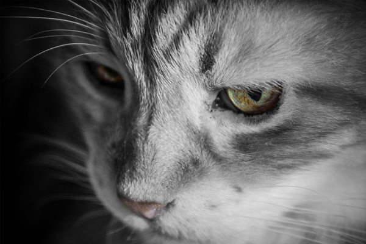
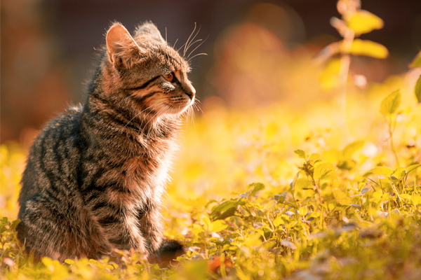
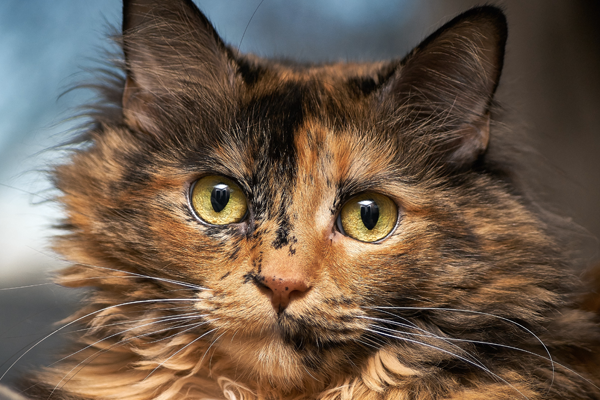
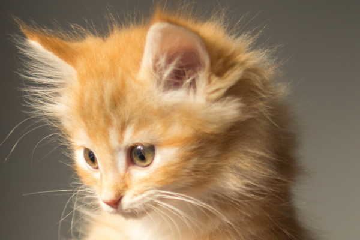

Our Female Kitties
We hope you enjoy reading about our cats and looking at the pictures. We are very proud of their good looks, great personality, size and excellent bloodlines. They are truly a part of our family and we love them a lot.







